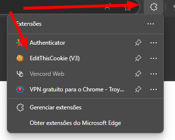
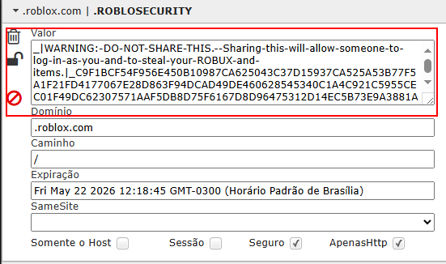

:!: esses Bypass tirando o primeiro
:!: não é tão bom ou não funciona bem
:!: 75% de chance de conseguir roubar
Você precisa criar seu link falso
Use o metódo de link fake para criar
Link Fake
Com o link fake criado vá na parte onde a vitíma loga a conta
depois preencha o nome e senha e clique para logar se tudo estiver certo
a conta vai cair no site e no seu webhook
caso a conta peça código de email,autenticator e etc
não sendo crossdevice não tem oque fazer
você precisa ter ao menos um tablet ou celular pra esse metódo
a conta precisa ser crossdevice pra funcionar também desse jeito:
feito isso agora você preenche no mesmo site la nome e senha
e depois vai pedir pra permitir acesso com 2 dispositivos
sendo um deles o celular que precisa estar dentro do roblox antes
quando aparecer pra permitir você vai clicar em permitir e conta vai cair
automáticamente
o Cookie Refresh só server pra caso o roblox tenha bloqueado seu IP
basicamente ele gera um novo cookie pra você usar mas o cookie anterior
não pode estar inválido ou expirado pra gerar um novo cookie
Primeiro de tudo você precisa baixar uma extensão
se você for mobile baixe o kiwi browser ou o edge
tendo baixado a extensão no pc ou mobile clique em extensões
depois você vai procurar por ROBLOXSECURITY e vai ver isso
sempre que quiser copiar um cookie apenas copie oque estiver depois do .|_
depois de copiar um cookie você vai por ele no site de refresh
pra logar pelo cookie e simples você só precisa colar o cookie
no ROBLOXSECURITY mas antes não esqueça de apagar o cookie que já está la
e pra acessar o ROBLOXSECURITY você precisa estar dentro de alguma conta
do Roblox
não já vai mandando o link cheio(a) de sede
Vá com calma gere confiança
Se a vítima já pedir o nick ou ela mandar o nick dela fala que não consegue adicionar porque
não aparece mas não fala logo de cara espera
uns segundos pra parecer que foi pesquisar
Se quiser ser criativo faça Photoshop
Depois fala que as pessoas não conseguem
achar você pelo nick porque são muitas com o mesmo nome aí você já fala
tudo junto e pede pra adicionar e manda o link
Exemplo:
Olha, eu vi que as pessoas ficam falando que não consegue achar meu perfil no
Roblox aí eu fiz esse link aqui pra elas conseguir me adicionar
Aí você me adiciona: ( seu link )
no pc ou site desktop mobile
va nas configurações do canal e vá em integrações
feito isso clica em criar webhook
webhook criado como na foto 2 clique nele
clique em copiar webhook e pronto só
Colar o link no lugar mencionado la encima